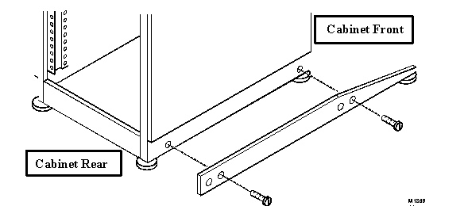
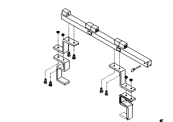
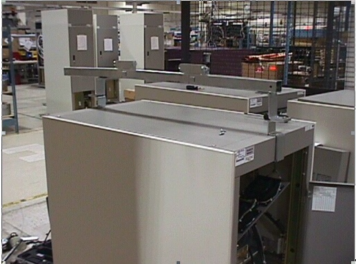
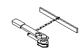
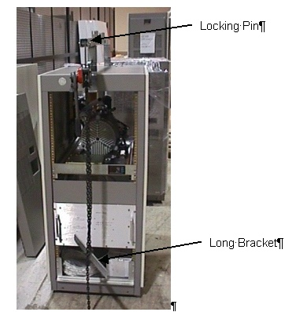
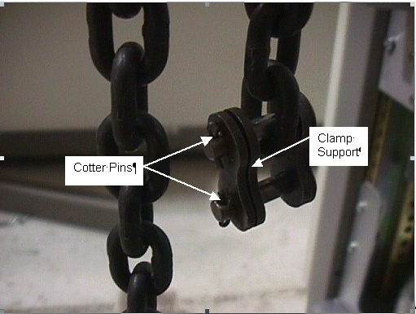
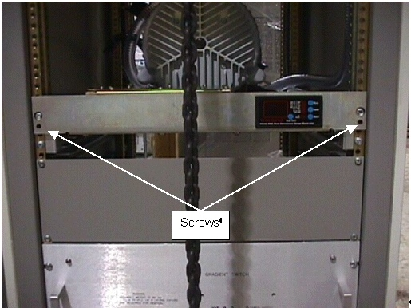
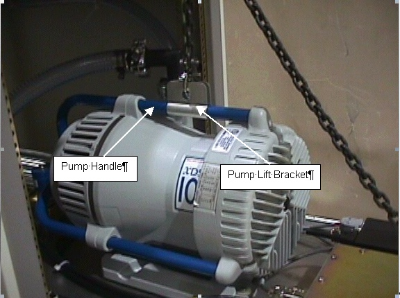

Operating Documentation
Direction 5133330-3, Rev# 14
Signa EXCITE HD 3.0T Service Methods
Module Version 2.0, Version Date 10/22/07
Operating Documentation |
| Required Persons | Preliminary Reqs | Procedure | Finalization |
|---|---|---|---|
| 1 | Not Applicable | 45 mins | Not Applicable |
| Item | Qty | Effectivity | Part# | Manufacturer | |
|---|---|---|---|---|---|
| Universal Lift Hoist Kit with TAC attachments | 1 | - | 46-317266G5, G6, G7, G8, or G9 | - | |
| Vacuum Pump | 1 | - | - | - | |
| Small hand tools including a Phillips-head screwdriver | 1 | - | - | - | |
| Medium-sized crescent wrenches | 2 | - | - | - | |
| Item | Qty | Effectivity | Part# | Manufacturer | |
|---|---|---|---|---|---|
| Vacuum Pump | 1 | - | - | - | |
| ||||
| Possible personal injury! | ||||
| Avoid serious injury or death by electrocution. | ||||
| Remove power from the TAC cabinet before attempting to remove the Vacuum Pump. Verify that the TAC breaker on the front of the PDU is in the off position. Lock and tag out the plexiglass cover on the front of the PDU. |
| ||||
| Possible personal injury! | ||||
| Cabinet tip hazard! | ||||
| Confirm that the aluminum anti-tip legs stored in the rear of the cabinet are installed on either side of the base of the cabinet before attempting to remove the vacuum from the TAC. |
| ||||
| POSSIBLE PERSONAL INJURY. HEAVY OBJECT. | ||||
| THE HOIST KIT WEIGHS 73 LBS/33 KG. | ||||
| ASSISTANCE TO LIFT THIS PRODUCT [MECHANICAL (DOLLIES) OR ADDITIONAL PERSONNEL] IS REQUIRED. |
| NOTE: | Verify that all hardware is securely fastened; all bolts and nuts must be tight prior to attaching the hoist assembly to the lift kit. |
| ||||
| Possible personal injury! | ||||
| Avoid serious injury or death by electrocution. | ||||
| Remove power from the TAC cabinet before attempting to remove the Vacuum Pump. Verify that the RFI/Amp and SSM breakers on the front of the PDU are off. Lock and tag out the plexiglas cover on the front of the PDU. |
Lock out and tag out the TAC cabinet. (Refer to OSHA LOCKOUT/TAGOUT REQUIREMENTS)
| ||||
| Possible personal injury! | ||||
| Cabinet tip hazard! | ||||
| Confirm that the aluminum anti-tip legs stored in the rear of the cabinet are installed on either side of the base of the cabinet before attempting to remove the Vacuum from the tac. |
Using the screws included with the anti-tip legs, secure the aluminum anti-tip legs to the threaded holes on each side of the base of the TAC Cabinet. See Illustration 1.
Illustration 1: Installing Anti-Tip Legs on Sides of Cabinet

Remove the front cover and the top bracket from the TAC cabinet.
Open the rear TAC cabinet door.
Remove the four (4) screws that attach the fan module to the TAC cabinet. Set the fan module in the cabinet.
Unplug the Vacuum Pump power cord from the side of the vacuum pump.
Remove the vacuum connector at the vacuum pump.
| ||||
| POSSIBLE PERSONAL INJURY. HEAVY OBJECT. | ||||
| THE HOIST KIT WEIGHS 73 LBS/33 KG. | ||||
| ASSISTANCE TO LIFT THIS PRODUCT [MECHANICAL (DOLLIES) OR ADDITIONAL PERSONNEL] IS REQUIRED. |
Locate and open the Universal Lift Hoist Kit.
| NOTE: | The Universal Lift Hoist is assembled from parts stored in the Universal Lift Hoist Kit. Lift attachments specially designed for the vacuum pump are located in the cardboard box at the bottom of the TAC Cabinet. |
Illustration 2: Steel Rail Sections, Hex Bolts, and Hex Nuts

Locate the three (3) large Steel Rail sections and place them on a flat surface for assembly. See Illustration 2.
Arrange the rail sections in the proper order (rear, center, then front) and fasten them together with 4.75” x 1/2” caps crews and hex nuts.
Use the crescent wrenches to tighten the cap screws.
Assemble and fasten the elevating brackets to the rail assembly. See Illustration 3.
Illustration 3: Hoist Top Rail Parts with Elevating Brackets

Center the Steel Rail and elevating bracket assembly at the top of TAC Cabinet, so the hoist assembly will face the front of the cabinet. See Illustration 4.
Illustration 4: Hoist Installed on TAC Cabinet

Tighten the bolts on the Steel Rail to secure it to the top of the cabinet.
| NOTE: | Verify that all hardware is securely fastened: all bolts and nuts must be tight prior to attaching the hoist assembly to the lift kit. |
Locate the Hoist Assembly in the Lift Kit. See Illustration 5.
Illustration 5: Hoist Assembly

Insert the Hoist Assembly into the open end of the front rail. Insert a locking pin into the holes near the front edge of the front rail. This locking pin prevents the Hoist Assembly from sliding out of the rails. See Illustration 6.
Illustration 6: Placement of Hoist Assembly into Front End of Steel Rail Assembly

Remove the two cotter pins that hold the clamp to the hoist chain. See Illustration 7.
Illustration 7: Hoist Chain With a Bracket

Remove the clamp support.
Remove the long bracket. See Illustration 6.
Remove the clamp support and cotter pins.
Remove the two screws that hold the vacuum pump shelf in place. See Illustration 8.
Illustration 8: Vacuum Pump Shelf

Slide the vacuum pump out of the cabinet until you can access the pump handle.
Attach the vacuum pump lift bracket to the pump handle. The vacuum pump lift bracket is located in the cardboard box at the bottom of the TAC cabinet. See Illustration 9.
Illustration 9: Vacuum Pump Lift Bracket

Attach the vacuum pump lift bracket to the hoist.
Remove the four (4) bolts that connect the vacuum pump to the shelf.
Hoist the vacuum pump up and out of the cabinet, then place it safely on the floor.
Remove the vacuum pump lift bracket from the vacuum pump.
Attach the vacuum pump lift bracket to the pump handle. SeeIllustration 9.
Hoist the vacuum pump up and place it safely in place on the pump shelf.
Install the four (4) bolts that attach the vacuum pump to the shelf.
Remove the vacuum pump lift bracket from the vacuum pump.
Slide the vacuum pump shelf back into place.
Install the two screws that hold the vacuum pump shelf in place. SeeIllustration 8.
Remove the hoist assembly from front rail. See Illustration 6.
Loosen the bolts that secure the Steel Rail to the top of the cabinet.
Remove the Steel Rail from the cabinet.
Reattach the vacuum connector to the vacuum pump.
Plug the vacuum pump power cord into the side of the vacuum pump.
Replace the top bracket and front cover for the TAC Cabinet.
Replace the fan module and secure with four (4) screws.
Close the rear TAC cabinet door.
Remove the anti-tip legs. See Illustration 1.
Remove the lock out and tag out for the TAC Cabinet.
Disassemble and return the Universal Lift Hoist Kit components to the case and the vacuum pump lift bracket to the TAC Cabinet.
No finalization steps.